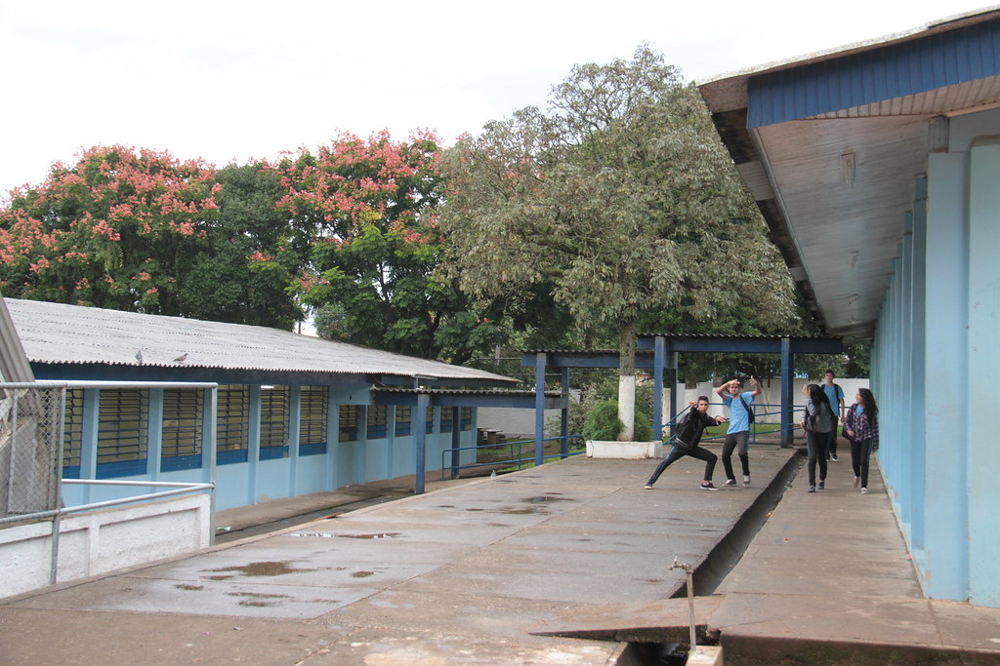

Iury Alexandre Farias Lima
Idade: 16 anos
Cor favorita: Vermelho
Matérias favoritas: Biologia e Educação Física
Hobbies: Jogar futebol e jogos eletrônicos.

Escola Professora Dirce Celestino do Amaral
Essa é a turma 2ºB Nem, composta por alunos dedicados e talentosos, sempre prontos para aprender e se desenvolver.
Idade: 16 anos
Cor favorita: Vermelho
Matérias favoritas: Biologia e Educação Física
Hobbies: Jogar futebol e jogos eletrônicos.
Idade: 17 anos
Cores favoritas: Roxo
Matérias favoritas: Biologia
Hobbies: Música.

Idade: 15 anos
Cores favoritas: Verde
Matéria favorita: Biologia
Hobbies: jogar futebol e jogos onlines

Idade: 16 anos
Cores favoritas: Vermelho
Matéria favorita: Biologia
Hobbies: jogar futebol e jogos onlines

A Escola Professora Dirce Celestino do Amaral foi fundada em 1970, com o objetivo de oferecer uma educação de qualidade no ensino fundamental e médio.
